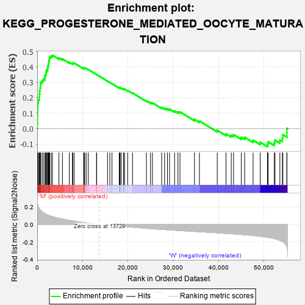
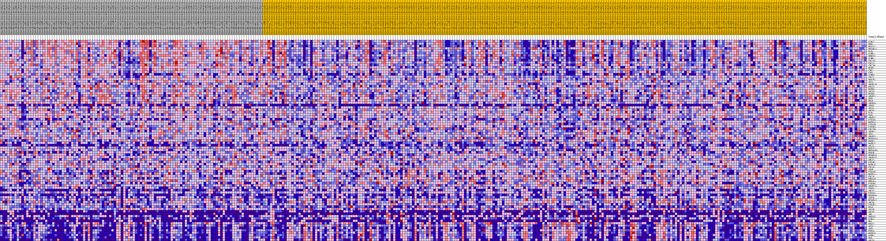
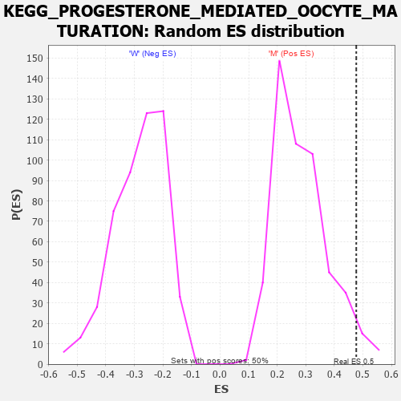

| Dataset | MUC16.MUC16.cls#M_versus_W.MUC16.cls#M_versus_W_repos |
| Phenotype | MUC16.cls#M_versus_W_repos |
| Upregulated in class | M |
| GeneSet | KEGG_PROGESTERONE_MEDIATED_OOCYTE_MATURATION |
| Enrichment Score (ES) | 0.47690192 |
| Normalized Enrichment Score (NES) | 1.6778355 |
| Nominal p-value | 0.03373016 |
| FDR q-value | 0.11239933 |
| FWER p-Value | 0.505 |

| PROBE | DESCRIPTION (from dataset) | GENE SYMBOL | GENE_TITLE | RANK IN GENE LIST | RANK METRIC SCORE | RUNNING ES | CORE ENRICHMENT | |
|---|---|---|---|---|---|---|---|---|
| 1 | CCNA2 | na | 24 | 0.265 | 0.0306 | Yes | ||
| 2 | BUB1 | na | 70 | 0.241 | 0.0580 | Yes | ||
| 3 | MAD2L1 | na | 71 | 0.240 | 0.0861 | Yes | ||
| 4 | RPS6KA1 | na | 78 | 0.237 | 0.1137 | Yes | ||
| 5 | PLK1 | na | 98 | 0.232 | 0.1404 | Yes | ||
| 6 | CCNB2 | na | 143 | 0.221 | 0.1655 | Yes | ||
| 7 | PKMYT1 | na | 230 | 0.205 | 0.1879 | Yes | ||
| 8 | CCNB1 | na | 427 | 0.185 | 0.2060 | Yes | ||
| 9 | CDC25A | na | 498 | 0.179 | 0.2256 | Yes | ||
| 10 | CDC23 | na | 542 | 0.177 | 0.2455 | Yes | ||
| 11 | CDC25C | na | 624 | 0.172 | 0.2641 | Yes | ||
| 12 | MAPK1 | na | 734 | 0.165 | 0.2814 | Yes | ||
| 13 | CDK2 | na | 744 | 0.164 | 0.3004 | Yes | ||
| 14 | CDK1 | na | 1063 | 0.148 | 0.3119 | Yes | ||
| 15 | CCNB3 | na | 1351 | 0.136 | 0.3226 | Yes | ||
| 16 | CDC27 | na | 1710 | 0.125 | 0.3307 | Yes | ||
| 17 | MAP2K1 | na | 1733 | 0.124 | 0.3448 | Yes | ||
| 18 | AKT1 | na | 1908 | 0.119 | 0.3556 | Yes | ||
| 19 | ANAPC10 | na | 1974 | 0.117 | 0.3681 | Yes | ||
| 20 | GNAI3 | na | 2040 | 0.115 | 0.3804 | Yes | ||
| 21 | MAPK9 | na | 2291 | 0.110 | 0.3887 | Yes | ||
| 22 | ADCY3 | na | 2317 | 0.109 | 0.4010 | Yes | ||
| 23 | MAPK8 | na | 2419 | 0.107 | 0.4117 | Yes | ||
| 24 | ANAPC1 | na | 2500 | 0.106 | 0.4226 | Yes | ||
| 25 | PRKX | na | 2534 | 0.105 | 0.4343 | Yes | ||
| 26 | BRAF | na | 2618 | 0.103 | 0.4448 | Yes | ||
| 27 | ANAPC4 | na | 2702 | 0.102 | 0.4552 | Yes | ||
| 28 | SPDYC | na | 2754 | 0.101 | 0.4660 | Yes | ||
| 29 | ADCY7 | na | 3090 | 0.095 | 0.4711 | Yes | ||
| 30 | ADCY6 | na | 3355 | 0.091 | 0.4769 | Yes | ||
| 31 | FZR1 | na | 4799 | 0.071 | 0.4591 | No | ||
| 32 | RAF1 | na | 5570 | 0.063 | 0.4525 | No | ||
| 33 | ANAPC2 | na | 7084 | 0.048 | 0.4308 | No | ||
| 34 | PIK3CG | na | 7764 | 0.043 | 0.4235 | No | ||
| 35 | MAPK13 | na | 7853 | 0.042 | 0.4268 | No | ||
| 36 | PIK3CB | na | 8139 | 0.040 | 0.4264 | No | ||
| 37 | PIK3R3 | na | 10272 | 0.023 | 0.3904 | No | ||
| 38 | CDC25B | na | 10285 | 0.023 | 0.3928 | No | ||
| 39 | ANAPC7 | na | 10318 | 0.022 | 0.3948 | No | ||
| 40 | AKT2 | na | 10469 | 0.021 | 0.3946 | No | ||
| 41 | ANAPC5 | na | 10803 | 0.019 | 0.3908 | No | ||
| 42 | HSP90AA1 | na | 11269 | 0.016 | 0.3842 | No | ||
| 43 | MAPK3 | na | 13096 | 0.004 | 0.3515 | No | ||
| 44 | MAPK12 | na | 13114 | 0.004 | 0.3517 | No | ||
| 45 | ADCY1 | na | 15524 | -0.002 | 0.3083 | No | ||
| 46 | MAD2L2 | na | 16036 | -0.005 | 0.2996 | No | ||
| 47 | HSP90AB1 | na | 16505 | -0.008 | 0.2921 | No | ||
| 48 | PDE3B | na | 18103 | -0.016 | 0.2650 | No | ||
| 49 | RPS6KA3 | na | 18233 | -0.017 | 0.2646 | No | ||
| 50 | ANAPC13 | na | 18298 | -0.017 | 0.2655 | No | ||
| 51 | GNAI2 | na | 18555 | -0.018 | 0.2630 | No | ||
| 52 | PIK3R2 | na | 19058 | -0.021 | 0.2563 | No | ||
| 53 | MAPK14 | na | 19076 | -0.021 | 0.2584 | No | ||
| 54 | CDC16 | na | 19279 | -0.022 | 0.2573 | No | ||
| 55 | ARAF | na | 19974 | -0.025 | 0.2477 | No | ||
| 56 | PIK3CD | na | 21039 | -0.030 | 0.2319 | No | ||
| 57 | MAPK11 | na | 24102 | -0.043 | 0.1814 | No | ||
| 58 | CDC26 | na | 25003 | -0.046 | 0.1705 | No | ||
| 59 | PRKACB | na | 25430 | -0.048 | 0.1683 | No | ||
| 60 | PRKACA | na | 27466 | -0.055 | 0.1379 | No | ||
| 61 | PIK3R5 | na | 28119 | -0.058 | 0.1329 | No | ||
| 62 | ANAPC11 | na | 28744 | -0.060 | 0.1285 | No | ||
| 63 | SPDYA | na | 29205 | -0.061 | 0.1274 | No | ||
| 64 | ADCY2 | na | 30322 | -0.065 | 0.1148 | No | ||
| 65 | PIK3CA | na | 31062 | -0.067 | 0.1092 | No | ||
| 66 | RPS6KA6 | na | 31508 | -0.069 | 0.1092 | No | ||
| 67 | IGF1R | na | 34711 | -0.079 | 0.0604 | No | ||
| 68 | RPS6KA2 | na | 35799 | -0.082 | 0.0503 | No | ||
| 69 | ADCY4 | na | 39739 | -0.095 | -0.0100 | No | ||
| 70 | PIK3R1 | na | 41671 | -0.101 | -0.0332 | No | ||
| 71 | KRAS | na | 42835 | -0.105 | -0.0419 | No | ||
| 72 | ADCY9 | na | 43334 | -0.107 | -0.0384 | No | ||
| 73 | ADCY8 | na | 45052 | -0.114 | -0.0562 | No | ||
| 74 | INS | na | 45785 | -0.117 | -0.0558 | No | ||
| 75 | PRKACG | na | 47650 | -0.126 | -0.0749 | No | ||
| 76 | CCNA1 | na | 49221 | -0.134 | -0.0877 | No | ||
| 77 | MOS | na | 50832 | -0.146 | -0.0998 | No | ||
| 78 | GNAI1 | na | 50967 | -0.147 | -0.0850 | No | ||
| 79 | AKT3 | na | 52341 | -0.161 | -0.0911 | No | ||
| 80 | IGF1 | na | 52481 | -0.163 | -0.0746 | No | ||
| 81 | PDE3A | na | 53560 | -0.181 | -0.0731 | No | ||
| 82 | MAPK10 | na | 54111 | -0.195 | -0.0603 | No | ||
| 83 | CPEB1 | na | 54223 | -0.198 | -0.0391 | No | ||
| 84 | PGR | na | 55110 | -0.248 | -0.0262 | No | ||
| 85 | ADCY5 | na | 55113 | -0.248 | 0.0028 | No |

